| Study Area | Extent |
|---|---|
| Post-calving study area | 2,036,919 ha |
| Rut study area | 2,037,259 ha |
| FCH traditional home range | ~2,300,000 ha (23,000 km²) |
| Local Study Area (LSA) | 3 km buffer around mine infrastructure; 1.5 km buffer around Tote/Access Road |
7 Habitat suitability
8 Introduction
The Kudz Ze Kayah (KZK) Project is a proposed base-metal mine in the Yukon Plateau-North Ecoregion of the Canadian Boreal Cordillera Ecozone, approximately 260 km northwest of Watson Lake and 115 km southeast of Ross River, Yukon. The Project lies within the traditional home range of the Finlayson caribou herd (FCH), a population of Northern Mountain caribou (Rangifer tarandus caribou) assessed by the Committee on the Status of Endangered Wildlife in Canada (COSEWIC) as a Species of Special Concern, and listed as such under the federal Species at Risk Act (SARA) in 2005. The FCH is of significant ecological, economic, and cultural importance to the Kaska First Nation, resident and guided hunters, and the general public.
The federal Management Plan for the Northern Mountain Population of Woodland Caribou directs responsible agencies to (i) identify and assess the quality, quantity, and distribution of important caribou habitats, and (ii) manage and conserve those habitats. To meet these objectives at the KZK Project site, Alexco Environmental Group Inc. (AEG) developed a series of habitat suitability index (HSI) models for the FCH, built from over three decades of Yukon Government survey data supplemented by project-specific surveys carried out by AEG between 2015 and 2017.
Three life-requisite seasons were modelled:
- Post-calving (summer dispersal/growth period) and rut (fall breeding aggregation) — modelled in the December 2016 Caribou Habitat Suitability Report submitted as Appendix E-8 of the Project Proposal.
- Late winter — modelled in a January 2018 supplementary report (Caribou Late Winter Habitat Suitability Report), prepared after the Yukon Environmental and Socio-economic Assessment Board (YESAB) informally requested a winter-season model during its Adequacy Review; this model was subsequently appended to BMC’s Response Report #6 to YESAB Information Request (IR6), submitted July 2020. Winter habitat overlaps the Project’s Access Road but not the mine site itself, so it was not part of the original scope.
The purpose of each HSI was to predict the spatial distribution of suitable caribou habitat within the Local Study Area (LSA) — a 3 km buffer around proposed mine infrastructure and a 1.5 km buffer around the Tote/Access Road — and across the FCH’s traditional home range (~23,000 km²), in order to support the design of avoidance and mitigation measures and to assess potential residual effects of the Project on caribou habitat.
This workbook consolidates the background, methods, and results reported across these documents and reproduces the key summary statistics, membership functions, and results tables using R.
8.1 Study Area
The Project sits in the Geona Creek valley in the northeastern foothills of the Pelly Mountains, straddling the subalpine and lower alpine zones. Treeline occurs at approximately 1,550 m above sea level (masl); above 1,700 masl the landscape transitions to alpine tundra dominated by dwarf shrub, graminoid, and lichen cover. The Tote Road/Access Road corridor parallels the lower reaches of Finlayson Creek through open white and black spruce forest.
The FCH is an elevational, migratory ecotype. In spring, roughly two-thirds of the herd move from wintering grounds near the Pelly River to calve in the highlands of the southeastern Pelly Mountains; the remainder travel to mountains northeast of Finlayson Lake. Through summer, caribou disperse onto alpine plateaus and ridges to avoid predators and to seek relief from insects and heat, aggregating again in open alpine/subalpine habitat for the fall rut (peaking mid-October). In late fall the herd migrates northwest back toward the Pelly lowlands, becoming increasingly reliant on terrestrial lichen (roughly 70% of the winter diet) as green forage senesces. In late winter, the FCH concentrates in the low-elevation forest and shrublands around the Pelly River and Finlayson Lake, an area that sits in an orographic rain/snow-shadow north of the Pelly Mountains and typically receives less than 30 cm of precipitation annually — far below snow depths (50–90 cm) known to impede caribou mobility.
8.2 Habitat Selection
Caribou habitat requirements vary strongly by season, which is the ecological basis for building season-specific HSI models rather than a single year-round model:
- Spring/calving (Apr–Jun): migration to calving grounds; solitary, high-visibility alpine sites or concealing subalpine cover, away from alternate prey (e.g., moose) that support predator populations.
- Summer/post-calving (Jun–Sep): dispersal into small groups on upper subalpine/alpine ridges, plateaus and upper-elevation streams; forage on forbs, deciduous leaves, lichens, fungi, grasses, and sedges; use of windy ridges and snow patches for insect and heat relief.
- Fall/rut (peaks mid-October): aggregation in open alpine and subalpine habitat; 2015–2016 early winter surveys found FCH remaining on rutting grounds in the Project area until mid-December.
- Migration (late fall/spring): transit through boreal forest, subalpine, shrubland, and alpine tundra; diet shifts toward terrestrial lichen as herbaceous forage dies off.
- Late winter: concentration in low-elevation, low-snowpack forest/shrubland in the Pelly River–Finlayson Lake snow-shadow, where shallow snow allows cratering to access terrestrial lichen.
Winter habitat suitability was not modelled in the original 2016 report because the traditional core winter range lies ~100 km northwest of the Project site, outside the Project’s zone of influence (ZOI); the model was added later at YESAB’s request because the herd’s late-winter range overlaps the Access Road corridor.
9 Methods
9.1 Data Sources
Each HSI combined spatial environmental layers with independently collected caribou location data used for calibration (satellite collar and VHF telemetry relocation data — higher positional accuracy, lower sample size) and evaluation (aerial survey data — lower positional accuracy but far larger sample size). This split allowed an independent cross-validation approach (calibrate on one dataset, evaluate on another) rather than testing the model against the same data used to build it.
| Dataset | Description | Used in |
|---|---|---|
| Digital Elevation Model (DEM) | Elevation raster, resampled to 25 m | Rut / Post-calving / Late winter |
| Slope | Degrees of slope derived from DEM (25 m) | Rut / Post-calving / Late winter |
| Aspect | Degrees of aspect derived from DEM (25 m) | Rut / Post-calving only |
| Vegetation cover | Dominant class from Predictive Ecosystem Map (PEM), 25 m | Rut / Post-calving / Late winter |
| Winter precipitation | 1961–1990 climate normal, 1,672 m resampled to 25 m (PRISM/SNAP) | Late winter only |
| Caribou satellite collar points | FCH satellite locations, 2004–2011 (3 individuals) | Calibration |
| Caribou VHF relocation collar points | Fixed-wing telemetry relocations, 1982–1987, 2004 | Calibration |
| Caribou aerial survey points (YG) | Helicopter/fixed-wing survey locations, 1982–2014/2017 | Evaluation |
| Caribou aerial survey points (AEG/EDI) | Project-acquired survey locations, 2015–2017 | Evaluation |
| Survey methodology | Rut | Post-calving | Late winter |
|---|---|---|---|
| Satellite collar | 15 | 17 | 14 (3 from FCH) |
| Telemetry/VHF relocation | 104 | 51 | 136 |
| Aerial survey | 2,129 | 577 | 1,827 |
| Total | 2,248 | 645 | 1,977 |
Known biases affecting each survey type: satellite-collared animals were originally deployed to track the adjacent Nahanni herd, so only 3 FCH individuals were represented and their locations were sometimes biased toward the Nahanni range to the east; VHF relocation data have ~200 m positional accuracy because animals were located from a fixed-wing aircraft; and aerial survey flights deliberately targeted areas of expected high caribou density for demographic counts, over-representing those areas in the evaluation dataset.
9.2 Variables and Fuzzy Membership Functions
Four environmental variables were evaluated for the rut and post-calving models — elevation, slope, aspect, and vegetation cover — chosen because they are ecologically meaningful, well supported in the literature, and available continuously across the entire FCH home range. The late-winter model substituted winter precipitation for aspect (aspect showed no distributional signal in low-relief winter range and was dropped).
Elevation, slope, and precipitation were treated as continuous variables and rescaled to a 0–1 suitability index using a linear fuzzy membership function, with breakpoints set from the frequency distribution of calibration-data locations along each variable. Aspect and vegetation cover are discrete/categorical variables, ranked 0–1 directly from observation frequency in each class and refined with expert opinion.
9.2.1 Elevation
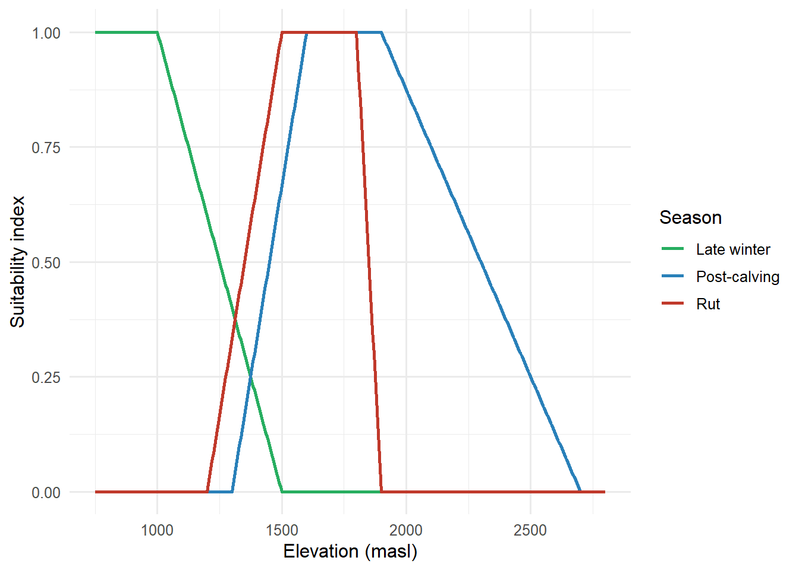
Post-calving suitability peaks at higher elevation (1,600–1,900 masl) than rut (1,500–1,800 masl), consistent with caribou seeking high ridges/plateaus for predator, heat, and insect avoidance during summer. Late-winter suitability is highest at low elevation (≤1,000 masl) and declines to zero by 1,500 masl, reflecting the herd’s descent into the Pelly River/Finlayson Lake lowlands.
9.2.2 Slope
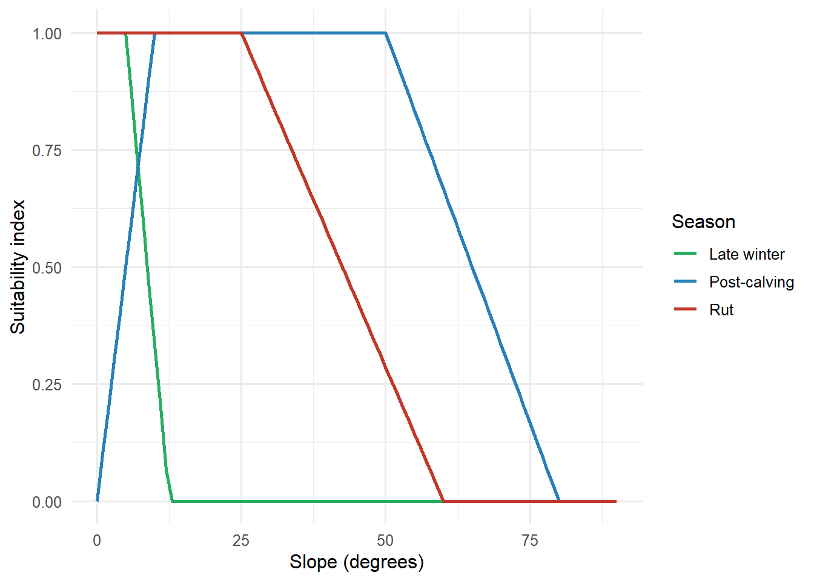
Rut habitat is most suitable on gentle terrain (≤25°), falling to zero by 60°. Post-calving habitat tolerates a wider plateau of moderate slope (10°–50°), consistent with use of ridges and upper plateaus. Late-winter habitat is essentially flat-terrain habitat, with suitability collapsing above ~12.5°, reflecting use of the lowland forest/shrub mosaic rather than mountain terrain.
9.2.3 Aspect (rut and post-calving only)
| Aspect class (degrees) | Rut suitability | Post-calving suitability |
|---|---|---|
| ≤0 | 0.4 | 0.4 |
| 0–90 | 0.5 | 0.7 |
| 90–180 | 0.7 | 0.7 |
| 180–270 | 0.7 | 0.2 |
| 270–360 | 0.5 | 0.5 |
Aspect showed the weakest discriminating signal of any variable in the rut/post-calving models (observation frequency varied only modestly across the four quadrants) and consequently received a lower variable weighting than elevation, slope, or vegetation. It was dropped altogether from the late-winter model because winter range is largely flat terrain, where aspect has little ecological meaning.
9.2.4 Vegetation Cover
| Vegetation class | Rut | Post-calving | Late winter |
|---|---|---|---|
| Herb/Bryoid | 1.0 | 1.0 | 0.0 |
| Shrub | 0.8 | 0.5 | 1.0 |
| Deciduous | 0.0 | 0.0 | 0.0 |
| Mixedwood | 0.0 | 0.0 | 0.0 |
| Coniferous | 0.5 | 0.1 | 1.0 |
| Treed wetland | NA | NA | 0.0 |
| Water/Ice | 0.0 | 0.0 | 0.5 |
| Rock | 0.0 | 0.3 | NA |
Vegetation classes were derived from the Regional Ecosystems of East-Central Yukon Predictive Ecosystem Map (PEM; Makonis Consulting Ltd. 2013), reclassified to dominant cover type. Herb/bryoid and shrub classes dominate suitable rut and post-calving habitat, while coniferous and shrub cover — the principal terrestrial-lichen-bearing habitat — dominate suitable late-winter habitat.
9.2.5 Winter Precipitation (late winter only)
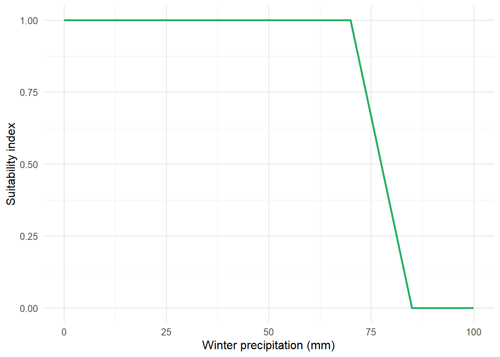
Winter precipitation (a proxy for snow depth) was added specifically for the late-winter model, since shallow snowpack is critical to caribou cratering access to terrestrial lichen. Suitability is highest below 70 mm and falls to zero by 85 mm, consistent with the FCH winter range’s position in the Pelly Mountains’ rain/snow-shadow (long-term average snowpack along the Robert Campbell Highway ≈ 40 cm, well below the 50–90 cm reported to impede caribou mobility).
9.3 Model Development
For each season, the reclassified variable layers (each rescaled 0–1) were resampled to a common 25 m grid, multiplied by an importance weight, and summed to produce a single continuous suitability surface (0–1). Aspect and vegetation (categorical, less discriminating) generally received lower weights than elevation and slope; for the late-winter model, all four variables were weighted evenly:
\[\text{Late winter HSI} = 0.25 \times \text{Elevation} + 0.25 \times \text{Slope} + 0.25 \times \text{Vegetation} + 0.25 \times \text{Precipitation}\]
Focal statistics (a 100 m / 4-cell radius smoothing window) were then applied to remove isolated single-cell artifacts and produce a spatially continuous surface, and the result was reclassified into six ordinal habitat classes (Nil, Very Low, Low, Moderate, Moderately High, High) following the British Columbia Wildlife Habitat Rating Standards (RIC 1999).
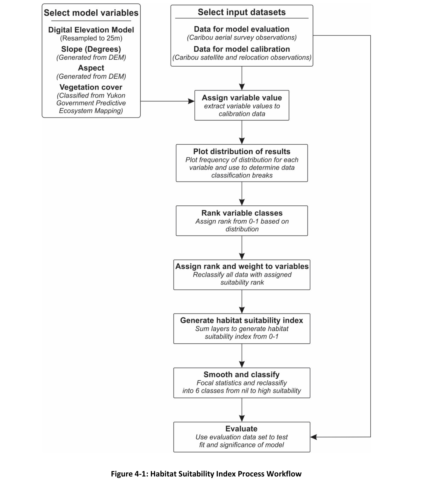
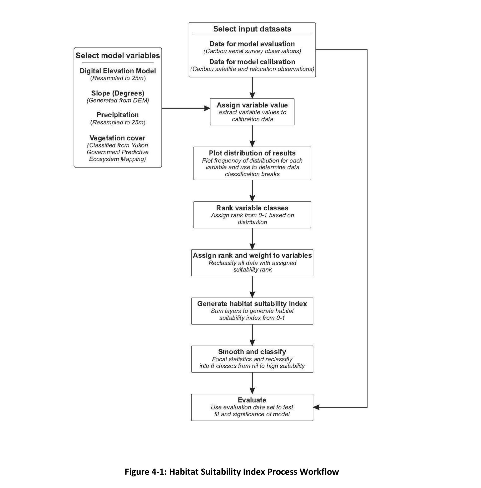
9.4 Model Evaluation
Models were evaluated using the non-parametric Kendall tau test, chosen over Spearman’s rank correlation because it is less sensitive to error and performs better with smaller sample sizes. The test assessed whether the six ordinal HSI classes were correlated with the density of independent aerial survey observations (i.e., data withheld from model calibration). A model was accepted as statistically significant at α = 0.05, and where multiple candidate weighting/breakpoint schemes were tested, the version with the highest tau coefficient (strongest correlation) was retained as final. All statistics were computed in R (R Core Team 2014).
| Season | Kendall's tau | p-value | Interpretation |
|---|---|---|---|
| Post-calving | 1.0000 | 0.0014 | Significant, very strong positive correlation |
| Rut | 0.7333 | 0.0278 | Significant, strong positive correlation |
| Late winter | 1.0000 | 0.0014 | Significant, very strong positive correlation |
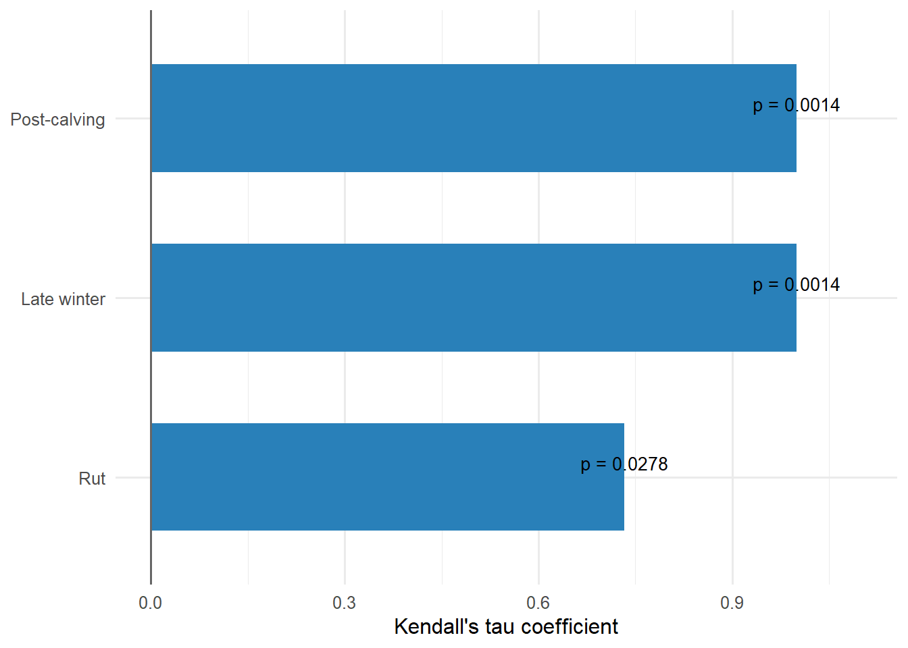
10 Results
10.1 Rut and Post-Calving Habitat Suitability
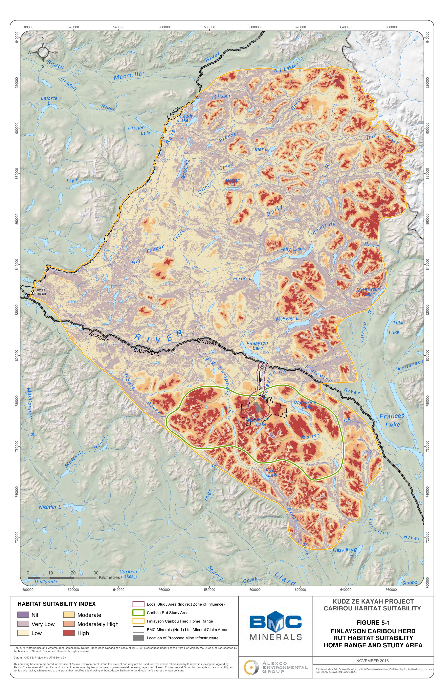
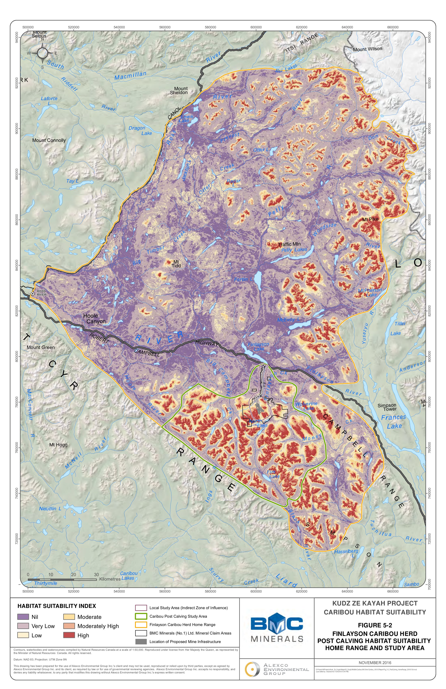
Across the FCH home range (~2,037,000 ha), the final HSI rasters were summarized into the six ordinal suitability classes and cross-tabulated against the independent aerial survey observation counts:
| Habitat suitability | Rut area (ha) | Rut % of range | Rut occurrences | Post-calving area (ha) | Post-calving % of range | Post-calving occurrences |
|---|---|---|---|---|---|---|
| Nil | 2,938 | 1 | 2 | 467,929 | 23 | 2 |
| Very low | 631,895 | 31 | 29 | 1,012,818 | 50 | 12 |
| Low | 830,922 | 41 | 89 | 224,298 | 11 | 14 |
| Moderate | 213,789 | 10 | 149 | 102,307 | 5 | 59 |
| Moderately high | 192,737 | 9 | 474 | 101,316 | 5 | 124 |
| High | 164,978 | 8 | 1,381 | 128,251 | 6 | 337 |
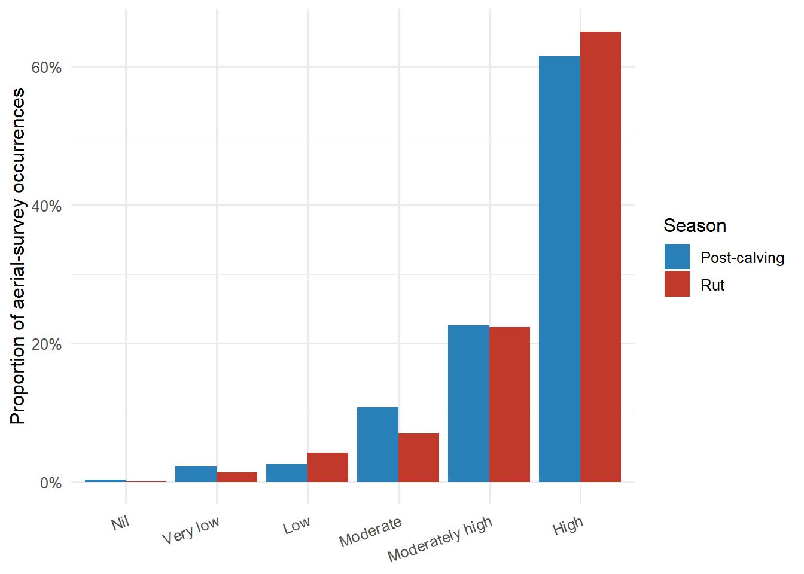
The proportion of observations climbs steeply through the higher suitability classes for both seasons — the High class contains only 8% of the rut range area but captures 65% of rut occurrences (1,381 of 2,124), and only 6% of the post-calving range area but captures 61% of post-calving occurrences (337 of 548) — supporting the models’ predictive validity.
| Metric | Rut | Post-calving |
|---|---|---|
| Moderately high–high suitability habitat in FCH range | 357,715 ha (17%) | 229,567 ha (11%) |
| ...of which directly affected by Project footprint | 777 ha (0.42%) | 118 ha (0.12%) |
| ...of which indirectly affected within LSA | 4,771 ha (2.72%) | 2,778 ha (2.39%) |
| Directly affected as % of same-quality habitat within LSA | ~15% | ~4% |
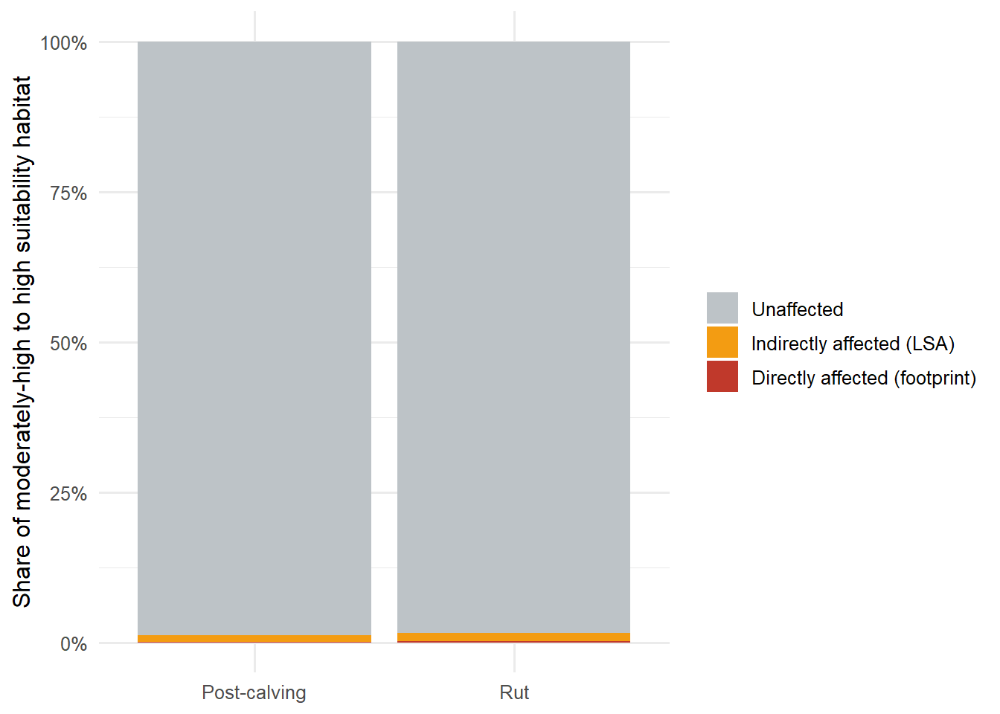
Within the LSA specifically, moderately-high and high suitability rut habitat was concentrated close to the Project footprint — where the direct footprint overlaps rut habitat, the impact reaches ~15% of the same-quality habitat available within the LSA, compared with only ~4% for post-calving habitat. Applying a 100 m focal-statistics smoothing pass to the raw suitability surface (Figure 4-2 of the original report) removed isolated single-cell artifacts and produced a more spatially coherent (and more conservative, in terms of contiguous suitable-habitat patches) representation of the landscape than the unsmoothed output.
10.2 Late Winter Habitat Suitability
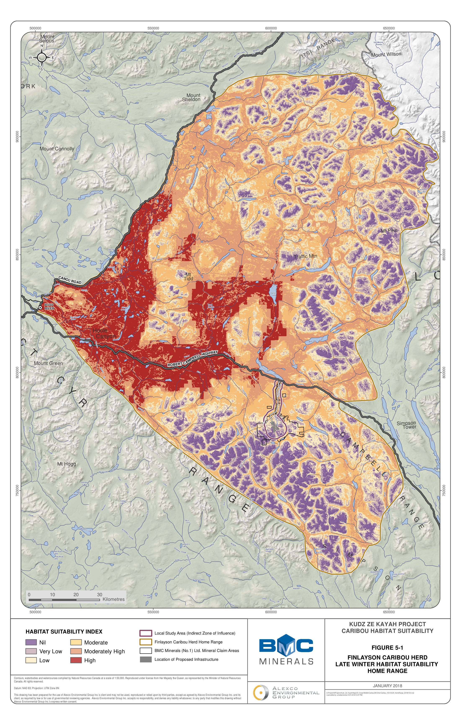
The late-winter model, added in 2018 in response to a YESAB Adequacy Review request, covered the same ~2,036,800 ha FCH home range extent.
| Habitat suitability | Area (ha) | % of FCH range |
|---|---|---|
| Nil | 198,867 | 10 |
| Very low | 275,813 | 14 |
| Low | 370,714 | 18 |
| Moderate | 488,971 | 24 |
| Moderately high | 431,098 | 21 |
| High | 271,315 | 13 |
| Habitat suitability | Indirectly affected - LSA (ha) | Directly affected - Access Road (ha) |
|---|---|---|
| Nil | 1,601 | 35 |
| Very low | 2,713 | 403 |
| Low | 2,975 | 456 |
| Moderate | 3,582 | 90 |
| Moderately high | 1,583 | 11 |
| High | 0 | 0 |
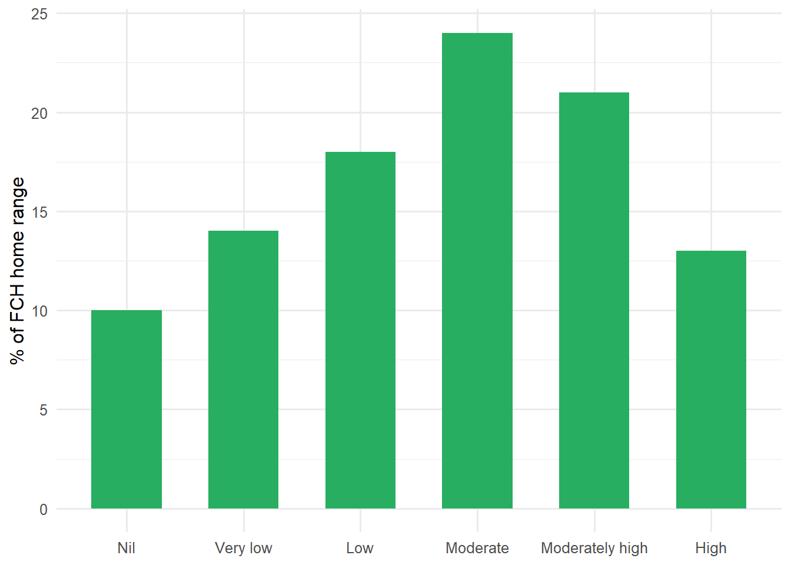
Unlike the rut and post-calving models — where suitable habitat is concentrated in a relatively small fraction of the range — late winter suitability is more evenly distributed, with moderately-high/high habitat covering 34% (702,413 ha) of the FCH range. Critically, no high-suitability late winter habitat occurs within the LSA, and the proposed mine footprint does not overlap any moderately-high or high-suitability late winter habitat at all — only the Access Road corridor intersects moderate (90 ha direct / 3,582 ha indirect) and moderately-high (11 ha direct / 1,583 ha indirect) winter habitat, representing less than 1% of all moderate-to-high suitability late winter habitat range-wide.
11 Discussion
Taken together, the three HSI models indicate that:
- The LSA contains high-quality rut and post-calving habitat, and the proposed mine footprint and Access Road directly overlap a small but ecologically meaningful proportion (≤1% range-wide, but up to 15% of same-quality LSA habitat) of the highest-value habitat for these two seasons.
- The LSA contains no high-quality late winter habitat, and the mine site itself has only low-to-nil winter suitability; only the Access Road corridor passes through moderate/moderately-high winter range, at a much smaller relative magnitude than the rut/post-calving effects.
- All three models showed statistically significant, strong-to-very-strong correlations (Kendall’s tau 0.73–1.00, p < 0.05) between predicted suitability class and independent aerial survey observation density, supporting their use as a defensible baseline for effects assessment.
The resulting suitability maps and hectare/percentage tables were used to inform the design of avoidance and mitigation measures and to support the assessment of residual Project effects on caribou habitat, as required under the federal NMP Management Plan objectives.
Several factors are not captured by the HSI framework and should be considered when interpreting results:
- Year-to-year and inter-annual variability in weather, snowpack, and climate change are not reflected; the models represent a long-term average pattern of habitat selection rather than a single-year prediction.
- Wildfire history and its effect on vegetation succession — and therefore on habitat suitability and caribou movement — is not incorporated into the vegetation cover layer.
- The models are built from presence-only data; the absence of caribou in a given location was not used to inform suitability, which can bias suitability estimates toward locations that happened to be surveyed.
- Positional accuracy varies substantially across the three input datasets (exact GPS fixes from satellite collars vs. ~200 m accuracy for VHF and aerial survey data), which propagates uncertainty into the variable values assigned to each calibration point.
- The HSI is a knowledge-based model that blends quantitative calibration data with expert opinion (e.g., weighting of aspect, treatment of rock/ice classes), and therefore carries some expert-derived bias.
12 Limitations
| # | Limitation |
|---|---|
| 1 | Only a small subset of location points came from satellite collars (exact ground locations); remaining VHF and aerial survey data carry ~200 m positional accuracy, affecting the variable values extracted at each location. |
| 2 | The HSI is a knowledge-based model combining quantitative data with expert opinion, and therefore reflects some expert-opinion bias (e.g., variable weighting, categorical class rankings). |
| 3 | Model accuracy is bounded by the accuracy of the original source data (DEM, PEM vegetation mapping, climate normals). |
| 4 | The model was built using presence-only data; absence of caribou at a location was not incorporated, which can bias suitability estimates. |
13 References
Adamczewski, J., R. Florkiewicz, R. Farnell, C. Foster, and K. Egli. (2010). Finlayson caribou herd late-winter population survey, 2007. Yukon Fish and Wildlife Branch Report SR-10-01. Whitehorse, Yukon, Canada.
Alexco Environmental Group (AEG). (2016). Kudz Ze Kayah Project, Wildlife Baseline Report. Submitted as Appendix E-8 of the Project Proposal for YESAB Executive Committee Screening.
Alexco Environmental Group (AEG). (2016). Caribou Habitat Suitability Report, Kudz Ze Kayah Project. BMC-15-01-845_026_Caribou Habitat Suitability Report_Rev0_161219. Prepared for BMC Minerals (No. 1) Ltd.
Alexco Environmental Group (AEG). (2018). Caribou Late Winter Habitat Suitability Report, Kudz Ze Kayah Project. BMC-17_Caribou_Late_Winter_HS_Rev0_171219. Prepared for BMC Minerals (No. 1) Ltd.
Bergerud, A. T., Jakimchuk, R. D., and D. R. Carruthers. (1984). The buffalo of the north: caribou (Rangifer tarandus) and human developments. Arctic 37:7–22.
Bergerud, A. T., and R. E. Page. (1987). Displacement and dispersion of parturient caribou at calving as antipredator tactics. Canadian Journal of Zoology 65:1597–1606.
BMC Minerals (No. 1) Ltd. (2017). Kudz Ze Kayah Project, Project Proposal for YESAB Executive Committee Screening. March 2017.
BMC Minerals (No. 1) Ltd. (2020). Response Report #6 to YESAB Executive Committee Information Request, Kudz Ze Kayah Project Proposal. July 2020.
Chisana Caribou Recovery Team. (2010). Recovery of the Chisana Caribou Herd in the Alaska/Yukon Borderlands: Captive-Rearing Trials. Yukon Fish and Wildlife Branch Report TR-10-02.
Cichowski, D. C. (1993). Seasonal movements, habitat use, and winter feeding ecology of woodland caribou in west-central British Columbia. B.C. Ministry of Forests, Victoria, B.C. Land Management Report No. 79.
Clarke, H. (2012). Knowledge-based habitat suitability modeling guidelines. Whitehorse: Yukon Environment.
EDI Environmental Dynamics Inc. (2015). Kudz Ze Kayah, Late Winter Ungulate Survey 2015. Prepared for BMC Minerals Ltd.
Environment Canada. (2012a). Management plan for the Northern Mountain Population of woodland caribou (Rangifer tarandus caribou) in Canada. Species at Risk Act Management Plan Series. Ottawa.
Environment Canada. (2012b). Recovery Strategy for the woodland caribou (Rangifer tarandus caribou), Boreal population, in Canada. Species at Risk Act Recovery Strategy Series. Ottawa.
Farnell, R., and J. McDonald. (1989). The influence of wolf predation on caribou mortality in Yukon’s Finlayson caribou herd. Proceedings of the 2nd North American Caribou Workshop. Alaska Department of Fish and Game, Juneau. Wildlife Technical Bulletin No. 8:52–70.
Fenger, M. A., Eastman, D. S., and C. J. Clement. (1986). Caribou habitat use on the Level Mountain and Horseranch ranges, British Columbia. Surveys and Resource Mapping Branch Working Report WR-8.
Gerhart, K. L., R. G. White, R. D. Cameron, and D. E. Russell. (1996). Growth and body composition of arctic caribou. Rangifer 16:393–394.
Grods, J., S. R. Francis, K. McKenna, J. C. Meikle, and S. Lapointe. (2013). East-central broad ecosystems (Version 1.1). Spatial data created for Energy, Mines and Resources, Government of Yukon by Makonis Consulting Ltd. and Associates, West Kelowna, BC.
Guisan, A., and N. Zimmermann. (2000). Predictive habitat distribution models in ecology. Ecological Modelling 135:147–186.
Ion, P. G., and G. P. Kershaw. (1989). The selection of snowpatches as relief habitat by woodland caribou (Rangifer tarandus caribou), MacMillan Pass, Selwyn/Mackenzie Mountains, N.W.T., Canada. Arctic 21(2):203–211.
Johnson, C. J., K. L. Parker, D. C. Heard, and D. R. Seip. (2004). Movements, foraging habits, and habitat use strategies of northern woodland caribou during winter: implications for forest practices in British Columbia. BC Journal of Ecosystems and Management 5(1):22–35.
Kuzyk, G. W., M. M. Dehn, and R. S. Farnell. (1999). Body size comparisons of alpine and forest wintering woodland caribou in Yukon. Canadian Journal of Zoology 77:1017–1024.
MacLean, N. (2003). Species Account and Wildlife Habitat Suitability Model Assumptions: Woodland Caribou. Prepared for the Ministry of Water, Land and Air Protection.
Morgan, T. (2015). Finlayson Caribou Fall Composition Survey 2015. Liard Regional Management, Environment Yukon, Watson Lake, Yukon.
Mörschel, F. M., and D. R. Klein. (1997). Effects of weather and parasitic insects on the behavior and group dynamics of caribou of the Delta herd, Alaska. Canadian Journal of Zoology 75:1659–1670.
Oosenbrug, S. M., and J. B. Theberge. (1980). Altitudinal movements and summer habitat preferences of woodland caribou (Rangifer tarandus caribou) in the Kluane Ranges, Yukon Territory, Canada. Arctic 33:59–72.
Parker, K. L., P. S. Barboza, and M. P. Gillingham. (2009). Nutrition integrates environmental responses of ungulates. Functional Ecology 23:57–69.
R Core Team. (2014). R: A Language and Environment for Statistical Computing. R Foundation for Statistical Computing, Vienna, Austria.
Resources Inventory Committee (RIC). (1999). British Columbia wildlife habitat rating standards, version 2.0. Ministry of Environment, Lands and Parks, Victoria, BC.
Russell, D. E., A. M. Martell, and W. A. C. Nixon. (1993). Range ecology of the Porcupine caribou herd in Canada. Rangifer Special Issue No. 8.
Skoog, R. C. (1968). Ecology of caribou (Rangifer tarandus granti) in Alaska. Ph.D. Thesis, University of California, Berkeley.
Statistics Solutions. (2016). Kendall’s Tau and Spearman’s Rank Correlation Coefficient. Accessed October 17, 2016.
Stevenson, S. K., H. M. Armleder, M. J. Jull, D. G. King, E. L. Terry, B. N. McLellan, and K. N. Child. (1994). Mountain caribou in managed forests: preliminary recommendations for managers. BC Ministry of Forests.
Thomas, D. C., and D. R. Gray. (2002). Status report on woodland caribou Rangifer tarandus caribou in Canada. COSEWIC Assessment and Update Status Report. Committee on the Status of Endangered Wildlife in Canada, Ottawa.
Wahl, H. E., D. B. Fraser, R. C. Harvey, and J. B. Maxwell. (1987). Climate of Yukon. Environment Canada, Climatological Studies No. 40, Ottawa.